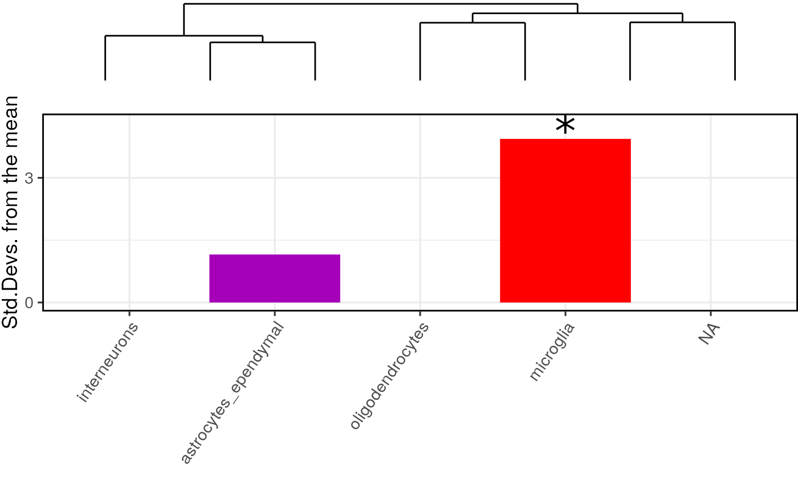

Expression Weighted Celltype Enrichment with EWCE
Alan Murphy and Nathan Skene
2021-06-17
Source:vignettes/EWCE.Rmd
EWCE.RmdCitation
If you use the EWCE package as well then please cite
If you use the cortex/hippocampus single cell data associated with this package then please cite the following papers:
Introduction
The EWCE package is designed to facilitate expression weighted cell type enrichment analysis as described in our Frontiers in Neuroscience paper.1
The package was originally designed to work with the single cell cortical transcriptome data from the Linnarsson lab2 which is available at http://linnarssonlab.org/cortex/. Using this package it is possible to read in any single cell transcriptome data, provided that you have a cell by gene expression matrix (with each cell as a separate column) and a separate annotation dataframe, with a row for each cell. EWCE can also handle SingleCellExperiment (SCE) objects or other Ranged SummarizedExperiment (SE) datatypes as input.
The EWCE process involves testing for whether the genes in a target list have higher levels of expression in a given cell type than can reasonably be expected by chance. The probability distribution for this is estimated by randomly generating gene lists of equal length from a set of background genes.
The EWCE method can be applied to any gene list. In the paper we reported it’s application to genetic and transcriptomic datasets, and in this vignette we detail how this can be done.
Note that throughout this vignette we use the terms ‘cell type’ and ‘sub-cell type’ to refer to two levels of annotation of what a cell type is. This is described in further detail in our paper1, but relates to the two levels of annotation provided in the Linnarsson dataset2. In this dataset a cell is described as having a cell type (i.e. ‘Interneuron’) and subcell type (i.e. ‘Int11’ a.k.a Interneuron type 11).
Overview
The process for using EWCE essentially involves three steps.
First, one needs to load the relevant single cell transcriptome dataset. Single cell transcriptome data can be read in from a text file using the read_celltype_data if necessary.
The user then obtains a gene set and a suitable background gene set. As the choice of gene sets is up to the user we do not provide functions for doing this. Appropriate choice of background set is discussed in the associated publication.
Bootstrapping is then performed using the bootstrap_enrichment_test function.
Installing EWCE
The EWCE package is in the process of being accepted on Bioconductor. In the meantime, to install and run the package, one needs to first install the devel version of R (version 4.1) which can be found at https://cran.r-project.org/. Next install the package and associated data package from Github by running the following lines of code in R:
if (!require("devtools")) {
install.packages("devtools")
}
devtools::install_github("neurogenomics/ewceData")
devtools::install_github("nathanskene/ewce")To install EWCE on Bioconductor run:
if (!require("BiocManager"))
install.packages("BiocManager")
BiocManager::install(version = "devel")
BiocManager::install("EWCE")
You can then load the packages necessary for this tutorial:
Loading single cell transcriptome data
Loading datasets
The first step for all analyses is to load the single cell transcriptome (SCT) data. For the purposes of this example we will use the dataset described in “Cell types in the mouse cortex and hippocampus revealed by single-cell RNA-seq”, Science, 2015. This is stored and can be loaded as follows from ewceData package.
Important note: The code (available in inst/scripts/make-data.R) to derive this data can be used on other downloaded paper’s data. Note you do NOT have to format your input single cell data like the Linnarsson data. Just read it into R such that you have an expression matrix and an annotation data frame or as an SCE or other Ranged SummarisedExperiment object. The three columns that you must have in the annotation data frame are “cell_id”, “level1class” and “level2class”.
To check the data, we can quickly plot the distribution of expression of a given gene across all the cell types.
#example datasets held in ewceData package
cortex_mrna <- cortex_mrna()
gene="Necab1"
cellExpDist = data.frame(e=cortex_mrna$exp[gene,],
l1=cortex_mrna$annot[
colnames(cortex_mrna$exp),]$level1class)
ggplot(cellExpDist) + geom_boxplot(aes(x=l1,y=e)) + xlab("Cell type") +
ylab("Unique Molecule Count") +
theme(axis.text.x = element_text(angle = 90, hjust = 1)) To note for the analysis of the cortex_mrna dataset,I will proved the alternative for an SCE object under each segment of code if there is any difference. If you would like to try running the functions on an SCE object instead, we can convert cortex_mrna as follows:
if (!"SingleCellExperiment" %in% rownames(installed.packages()))
BiocManager::install("SingleCellExperiment")
library(SingleCellExperiment)
#Make SCE object
cortex_mrna <- cortex_mrna()
cortex_mrna_sce <-
SingleCellExperiment::SingleCellExperiment(
assays=list(counts=cortex_mrna$exp),
colData=cortex_mrna$annot)
# Now to plot the SCE dataset:
gene="Necab1"
cellExpDist_sce = data.frame(e=assays(cortex_mrna_sce)$counts[gene,],
l1=colData(cortex_mrna_sce)[
colnames(assays(cortex_mrna_sce)$counts),
]$level1class)
ggplot(cellExpDist_sce) + geom_boxplot(aes(x=l1,y=e)) + xlab("Cell type") +
ylab("Unique Molecule Count") +
theme(axis.text.x = element_text(angle = 90, hjust = 1)) It is very common for publically available transcriptome datasets to use incorrect gene symbols (often some gene names will have been mangled by opening in Excel). A function is provided to correct these where out of date aliases were used and give a warning if appears possible that excel has mangled some of the gene names. This function can be used with a downloaded reference file like the MRK_List2 file from MGI which lists known synonyms for MGI gene symbols. If no file path is passed, there is a loaded reference dataset of the MRK_List2 which will be used: mgi_synonym_data(). We recommend running this function on all input datasets.
cortex_mrna$exp = fix_bad_mgi_symbols(cortex_mrna$exp)For the SCE version, pass the whole SCE object
#Note that data in SCE object must be in 'counts' assay
#The fix_bad_hgnc_symbols fucntion can similarly take an SCE object as an input
cortex_mrna_sce = fix_bad_mgi_symbols(cortex_mrna_sce)Drop genes
The vignette takes a while to go through if you use all genes. So let’s restrict to 1000 random genes.
nKeep = 1000
must_keep = c("Apoe","Gfap","Gapdh")
set.seed(123458)
keep_genes = c(must_keep,sample(rownames(cortex_mrna$exp),997))
cortex_mrna$exp = cortex_mrna$exp[keep_genes,]#SCE
nKeep = 1000
must_keep = c("Apoe","Gfap","Gapdh")
set.seed(123458)
keep_genes = c(must_keep,sample(names(rowRanges(cortex_mrna_sce)),997))
cortex_mrna_sce = cortex_mrna_sce[keep_genes,]Transform the data
A different number of reads is found across each cell. We suggest using scTransform to normalise for differences due to cell size, then linearly scale. Note that this might be slow.
library(sctransform)
scT = sctransform::vst(cortex_mrna$exp, return_cell_attr = TRUE)##
|
| | 0%
|
|=================================== | 50%
|
|======================================================================| 100%
##
|
| | 0%
|
|=================================== | 50%
|
|======================================================================| 100%
cortex_mrna$exp_scT = correct_counts(scT, cortex_mrna$exp) # umi_corrected##
|
| | 0%
|
|=================================== | 50%
|
|======================================================================| 100%
cortex_mrna$exp_scT_normed =
Matrix::t(Matrix::t(cortex_mrna$exp_scT)*(1/Matrix::colSums(
cortex_mrna$exp_scT)))#SCE
library(sctransform)
scT = sctransform::vst(assays(cortex_mrna_sce)$counts,return_cell_attr = TRUE)
exp_scT = correct_counts(scT, assays(cortex_mrna_sce)$counts) # umi_corrected
#filter SCE object to only the 885 genes returned by sctransform
cortex_mrna_sce <- cortex_mrna_sce[rownames(exp_scT),]
assays(cortex_mrna_sce)$normcounts =
Matrix::t(Matrix::t(exp_scT)*(1/Matrix::colSums(exp_scT)))Note that this is optional (and was not used in the original EWCE publication) so by all means ignore this scTransform step.
Calculate specificity matrices
The next steps are as follows: 1) Drop genes which do not show significant evidence of varying between level 2 cell types (based on ANOVA) 2) Calculate cell type averages and specificity for each gene 3) Drop all genes which do not have 1:1 mouse:human orthologs
The last step is only necessary if you plan to compare to human data, i.e. genesets resulting from human genetics.
Rather than returning the data directly, the functions save the calculated data to a file and the file name is returned.
# Generate celltype data for just the cortex/hippocampus data
exp_CortexOnly_DROPPED =
drop_uninformative_genes(exp=cortex_mrna$exp_scT_normed,
level2annot = cortex_mrna$annot$level2class)
annotLevels = list(level1class=cortex_mrna$annot$level1class,
level2class=cortex_mrna$annot$level2class)
fNames_CortexOnly = generate_celltype_data(exp=exp_CortexOnly_DROPPED,
annotLevels=annotLevels,
groupName="kiCortexOnly",
savePath=tempdir())
print(fNames_CortexOnly)## [1] "/tmp/RtmpNl5d4M/CellTypeData_kiCortexOnly.rda"
fNames_CortexOnly = filter_genes_without_1to1_homolog(fNames_CortexOnly)
print(fNames_CortexOnly)## [1] "/tmp/RtmpNl5d4M/CellTypeData_kiCortexOnly.rda"
## [2] "/tmp/RtmpNl5d4M/CellTypeData_kiCortexOnly_1to1only.rda"
load(fNames_CortexOnly[1])#SCE
# Generate celltype data for just the cortex/hippocampus data
exp_CortexOnly_DROPPED =
drop_uninformative_genes(exp=assays(cortex_mrna_sce)$normcounts,
level2annot = colData(cortex_mrna_sce)$level2class)
annotLevels = list(level1class=colData(cortex_mrna_sce)$level1class,
level2class=colData(cortex_mrna_sce)$level2class)
fNames_CortexOnly = generate_celltype_data(exp=exp_CortexOnly_DROPPED,
annotLevels=annotLevels,
groupName="kiCortexOnly",
savePath=tempdir())
print(fNames_CortexOnly)
fNames_CortexOnly = filter_genes_without_1to1_homolog(fNames_CortexOnly)
print(fNames_CortexOnly)
load(fNames_CortexOnly[1])To note on the SCE approach, these are the only differences for handling the analysis of an SCE object. All downstream analysis on cortex_mrna would be the same. The same approach can be used for other datasets in the vignette if converted such as hypothalamus_mrna or your own SCE object.
Merging two single cell datasets
Often it is useful to merge two single cell datasets. For instance, there are separate files for the cortex and hypothalamus datasets generated by the Karolinska institute. A subset of the resulting merged dataset is loaded using ctd() but it is worth understanding the approach (outlined below) if you want to repeat this for other single cell datasets.
The dataset is available from the GEO but is also available in the ewceData package: hypothalamus_mrna(). See the ewceData for details of how this file was preprocessed after first being downloaded from GEO, unzipped and read into R.
We can now merge the hypothalamus dataset with the cortex dataset and then calculate specificity:
#load hypothalamus dataset
hypothalamus_mrna <- hypothalamus_mrna()
# First fix bad MGI symbols
hypothalamus_mrna$exp = fix_bad_mgi_symbols(hypothalamus_mrna$exp)
# Merge the datasets - again this can be run for SCE or other ranged SE objects also,
# Syntax is explained when processing cortex dataset above
merged_KI = merge_two_expfiles(exp1=hypothalamus_mrna$exp, exp2=cortex_mrna$exp,
annot1=hypothalamus_mrna$annot,
annot2=cortex_mrna$annot,
name1="Hypothalamus (KI)",
name2="Cortex/Hippo (KI)")
# Drop genes which don't vary significantly between cell types
exp_merged_DROPPED = drop_uninformative_genes(exp=merged_KI$exp,
level2annot = merged_KI$annot$level2class)
# Calculate specificity data
annotLevels = list(level1class=merged_KI$annot$level1class,
level2class=merged_KI$annot$level2class)
#Update file path to where you want the celltype data files to save on disk
fNames_MergedKI = generate_celltype_data(exp=exp_merged_DROPPED,
annotLevels,"MergedKI",
savePath = tempdir())
#filter_genes_without_1to1_homolog will save the files to the same directory
fNames_MergedKI = filter_genes_without_1to1_homolog(fNames_MergedKI)
load(fNames_MergedKI[2])
#data now loaded in ctd objectUnderstanding specificity matrices
While not required for further analyses it helps to understand what the outputs of this function are.
Note firstly, that it is a list such that ctd[[1]] contains data relating to level 1 annotations and ctd[[2]] relates to level 2 annotations.
Using the ggplot2 package to visualise the data, let us examine the expression of a few genes. If you have not already done so you will need to first install the ggplot2 package with install.packages("ggplot2").
For this example we use a subset of the genes from the merged dataset generated above, which is accessed using ctd(). We recommend that you use the code above to regenerate this though and drop the first command from the below section.
#Load merged cortex and hypothalamus dataset generated by Karolinska institute
ctd <- ctd()
set.seed(1234)
library(reshape2)
genes = c("Apoe","Gfap","Gapdh")
exp = melt(cbind(ctd[[1]]$mean_exp[genes,],genes),id.vars="genes")
colnames(exp) = c("Gene","Cell","AvgExp")
ggplot(exp)+geom_bar(aes(x=Cell,y=AvgExp),stat="identity")+facet_grid(Gene~.)+
theme(axis.text.x = element_text(angle = 90, hjust = 1))
This graph shows the average expression of three genes: Apoe, Gfap and Gapdh. While there are substantial differences in which cell types express these genes, the dominant effect seen here is the overall expression level of the data. For the purposes of this analysis though, we are not interested in overall expression level and only wish to know about the proportion of a genes expression which is found in a particular cell type. We can study this instead using the following code which examines the data frame ctd[[1]]$specificity:
exp = melt(cbind(data.frame(ctd[[1]]$specificity[genes,]),genes),
id.vars="genes")
colnames(exp) = c("Gene","Cell","Expression")
ggplot(exp)+geom_bar(aes(x=Cell,y=Expression),stat="identity")+
facet_grid(Gene~.)+
theme(axis.text.x = element_text(angle = 90, hjust = 1))
We can now see in this graph that Gfap is the most specific to a cell type (Type 1 Astrocytes) of any of those three genes, with over 60% of it’s expression found in that cell type.
It can also be seen that the majority of expression of Gapdh is in neurons but because their are a greater number of neuronal subtypes, the total expression proportion appears lower. We can examine expression across level 2 cell type level annotations by looking at ctd[[2]]$specificity:
exp = melt(cbind(data.frame(ctd[[2]]$specificity[genes,]),genes),
id.vars="genes")
colnames(exp) = c("Gene","Cell","Specificity")
ggplot(exp)+geom_bar(aes(x=Cell,y=Specificity),stat="identity")+
facet_grid(Gene~.)+
theme(axis.text.x = element_text(angle = 90, hjust = 1))
Application to genetic data
Preparing gene lists
For the first demonstration of EWCE we will test for whether genes that are genetically associated with Alzheimer’s disease are enriched in any particular cell type. This gene list is stored within the package:
example_genelist <- example_genelist()
print(example_genelist)## [1] "APOE" "BIN1" "CLU" "ABCA7" "CR1" "PICALM"
## [7] "MS4A6A" "CD33" "MS4A4E" "CD2AP" "EOGA1" "INPP5D"
## [13] "MEF2C" "HLA-DRB5" "ZCWPW1" "NME8" "PTK2B" "CELF1"
## [19] "SORL1" "FERMT2" "SLC24A4" "CASS4"All gene IDs are assumed by the package to be provided in gene symbol format (rather than Ensembl/Entrez). Symbols can be provided as either HGNC or MGI symbols, though the genelistSpecies argument will need to be set appropriately. Likewise, the single cell dataset can use either human or mouse gene symbols, but the sctSpecies argument must be set to either “human” or “mouse”. The default species for both is mouse.
The example gene list here stores the human genes associated with disease, and hence are HGNC symbols.
The next step is to determine the most suitable background set. The experimental methods used to find these genes are all genome wide, so there is no restriction imposed as a result of that. Thus our initial background set is the set of all human genes. Not all human genes have mouse orthologs however, so we need to drop all genes from the target and background set which do not have mouse orthologs. To save repeatedly querying biomaRt we have a stored dataset containing all the human orthologs of MGI genes, mouse_to_human_homologs. We can use this to obtain the mouse orthologs of the target and background genes at the same time as we drop genes without orthologs:
mouse_to_human_homologs <- mouse_to_human_homologs()
m2h = unique(mouse_to_human_homologs[,c("HGNC.symbol","MGI.symbol")])
mouse.hits = unique(m2h[m2h$HGNC.symbol %in% example_genelist,"MGI.symbol"])
#mouse.bg = unique(setdiff(m2h$MGI.symbol,mouse.hits))
mouse.bg = unique(m2h$MGI.symbol)The target list is now converted to MGI symbols:
print(mouse.hits)## [1] "Apoe" "Inpp5d" "Cd2ap" "Nme8" "Cass4" "Mef2c" "Zcwpw1"
## [8] "Bin1" "Clu" "Celf1" "Abca7" "Slc24a4" "Ptk2b" "Picalm"
## [15] "Fermt2" "Sorl1"And we have 15604 genes in background set.
Setting analysis parameters
We now need to set the parameters for the analysis. For a publishable analysis we would want to generate over 10000 random lists and determine their expression levels, but for computational speed let us only use reps=100. We want to analyse level 1 annotations so set level to 1.
# Use 100 bootstrap lists for speed, for publishable analysis use >10000
reps=100
level=1 # <- Use level 1 annotations (i.e. Interneurons)Running EWCE analysis on genetic data
We have now loaded the SCT data, prepared the gene lists and set the parameters. We run the model as follows, Note we set the seed to ensure reproducibility in the bootstrap sampling function:
# Bootstrap significance test, no control for transcript length and GC content
set.seed(12345678)
full_results = bootstrap_enrichment_test(sct_data=ctd,hits=mouse.hits,
bg=mouse.bg,
reps=reps,annotLevel=level)A note on both the background and target gene lists, other common gene list objects can be used as inputs such as BiocSet::BiocSet and GESABase::GeneSet. Below is an example of how to format each for the target gene list (hits):
# Save both approaches as hits which will be passed to bootstrap_enrichment_test
#BiocSet::BiocSet, BiocSet_target contains the gene list target
hits <- unlist(BiocSet::es_element(BiocSet_target))
#GSEABase::GeneSet, GeneSet_target contains the gene list target
hits <- GSEABase::geneIds(GeneSet_target)
The main table of results is stored in full_results$results. We can see the most significant results using:
## p fold_change sd_from_mean
## microglia 0.02 1.5874363 2.1685250
## astrocytes_ependymal 0.07 1.3933377 1.6182268
## pyramidal CA1 0.64 0.9279105 -0.3700703
## oligodendrocytes 0.67 0.8596869 -0.6291881
## endothelial-mural 0.69 0.8617517 -0.5566451
## pyramidal SS 0.74 0.8785834 -0.6413216The results can be visualised using another function, which shows for each cell type, the number of standard deviations from the mean the level of expression was found to be in the target gene list, relative to the bootstrapped mean:

For publications it can be useful to plot a dendrogram alongside the plot. This can be done by including the cell type data as an additional argument. The dendrogram should automatically align with the graph ticks (thanks to Robert Gordon-Smith, Mres Molecular and Cellular Biosciences, Imperial College London for this solution):

If you want to view the characteristics of enrichment for each gene within the list then the generate_bootstrap_plots function should be used. This saves the plots into the BootstrapPlots folder. This takes the results of a bootstrapping analysis so as to only generate plots for significant enrichments. The listFileName argument is used to give the generated graphs a particular file name. The savePath argument is used here to save the files to a temporary directory, this can be updated to your preferred location. The file path where it was saved is returned so the temporary directory can be located if used.
bt_plot_location <-
generate_bootstrap_plots(sct_data=ctd,hits=mouse.hits,
bg=mouse.bg,reps=reps,annotLevel=1,
full_results=full_results,
listFileName="VignetteGraphs",
savePath = tempdir())Running EWCE analysis on genetic data with controls for transcript length and GC-content
When analysing genes found through genetic association studies it is important to consider biases which might be introduced as a result of transcript length and GC-content. The package can control for these by selecting the bootstrap lists such that the ith gene in the random list has properties similar to theith gene in the target list. To enable the algorithm to do this it needs to be passed the gene lists as HGNC symbols rather than MGI.
#human.hits = unique(m2h[m2h$HGNC.symbol %in% example_genelist,"HGNC.symbol"])
#human.bg = unique(setdiff(m2h$HGNC.symbol,human.hits))
human.hits = example_genelist
human.bg = unique(c(human.hits,m2h$HGNC.symbol))The bootstrapping function then takes different arguments:
# Again, set seed for reproducibility
set.seed(12345678)
# Bootstrap significance test controlling for transcript length and GC content
cont_results = bootstrap_enrichment_test(sct_data=ctd,hits=human.hits,
bg=human.bg,reps=reps,annotLevel=1,
geneSizeControl=TRUE,genelistSpecies="human",
sctSpecies="mouse")We plot these results using ewce_plot:

This shows that the controlled method generates enrichments that are generally comparable to the standard method.
Running EWCE analysis on cell type level annotations
Both the analyses shown above were run on level 1 annotations. It is possible to test on the level 2 cell type level annotations by changing one of the arguments.
# Again, set seed for reproducibility
set.seed(12345678)
# Bootstrap significance test controlling for transcript length and GC content
cont_results = bootstrap_enrichment_test(sct_data=ctd,hits=human.hits,
bg=human.bg,reps=reps,annotLevel=2,geneSizeControl=TRUE,
genelistSpecies="human",sctSpecies="mouse")
print(ewce_plot(cont_results$results,mtc_method="BH")$plain)
With the subcell analysis each microglial subtype was enriched and correspondingly we see here that the microglial cell type is enriched.
Plotting results from multiple gene lists
It is often useful to plot results from multiple gene list analyses together. The ewce_plot function allows multiple enrichment analyses to be performed together. To achieve this the results data frames are just appended onto each other, with an additional list column added detailing which analysis they relate to.
To demonstrate this we need to first generate a second analysis so let us sample thirty random genes, and run the bootstrapping analysis on it.
# Again, set seed for reproducibility
set.seed(12345678)
gene.list.2 = mouse.bg[1:30]
second_results = bootstrap_enrichment_test(sct_data=ctd,hits=gene.list.2,
bg=mouse.bg,reps=reps,annotLevel=1)
full_res2 = data.frame(full_results$results,list="Alzheimers")
scnd_res2 = data.frame(second_results$results,list="Second")
merged_results = rbind(full_res2,scnd_res2)
As expected, the second randomly generated gene list shows no significant enrichments.
Application to transcriptomic data
Analysing single transcriptome study
For the prior analyses the gene lists were not associated with any numeric values or directionality. The methodology for extending this form of analysis to transcriptomic studies simply involves thresholding the most upregulated and downregulated genes.
To demonstrate this we have an example dataset tt_alzh. This data frame was generated using limma from a set of post-mortem tissue samples from brodmann area 46 which were described in a paper by the Haroutunian lab3.
The first step is to load the data, obtain the MGI ids, sort the rows by t-statistic and then select the most up/down-regulated genes. The package then has a function ewce_expression_data which thresholds and selects the gene sets, and calls the EWCE function. Below we show the function call using the default settings, but if desired different threshold values can be used, or alternative columns used to sort the table.
# ewce_expression_data calls bootstrap_enrichment_test so
# set the seed for reproducibility
set.seed(12345678)
tt_alzh <- tt_alzh()
tt_results = ewce_expression_data(sct_data=ctd,tt=tt_alzh,annotLevel=1,
ttSpecies="human",sctSpecies="mouse")The results of this analysis can be plotted using the ewce_plot function.
ewce_plot(tt_results$joint_results)$plain
As was reported in our paper, neuronal genes are found to be downregulated while glial genes are upregulated.
Generating bootstrap plots for transcriptomes
A common request is to explain which differentially expressed genes are associated with a cell type…
# Set seed for bootstrap reproducibility
set.seed(12345678)
full_result_path =
generate_bootstrap_plots_for_transcriptome(sct_data=ctd,tt=tt_alzh,
annotLevel=1,
full_results=tt_results,
listFileName="examples",
reps=reps,ttSpecies="human",
sctSpecies="mouse",
onlySignif=FALSE,
savePath=tempdir())Merging multiple transcriptome studies
Where multiple transcriptomic studies have been performed with the same purpose, i.e. seeking differential expression in dlPFC of post-mortem schizophrenics, it is common to want to determine whether they exhibit any shared signal. EWCE can be used to merge the results of multiple studies.
To demonstrate this we use a two further Alzheimer’s transcriptome datasets coming from Brodmann areas 36 and 44: these area stored in tt_alzh_BA36 and tt_alzh_BA44. The first step is to run EWCE on each of these individually and store the output into one list.
# Load the data
tt_alzh_BA36 <- tt_alzh_BA36()
tt_alzh_BA44 <- tt_alzh_BA44()
# set seed for reproducibility
set.seed(12345678)
# Run EWCE analysis
tt_results_36 = ewce_expression_data(sct_data=ctd,tt=tt_alzh_BA36,annotLevel=1,
ttSpecies="human",sctSpecies="mouse")
tt_results_44 = ewce_expression_data(sct_data=ctd,tt=tt_alzh_BA44,annotLevel=1,
ttSpecies="human",sctSpecies="mouse")
# Fill a list with the results
results = add_res_to_merging_list(tt_results)
results = add_res_to_merging_list(tt_results_36,results)
results = add_res_to_merging_list(tt_results_44,results)
# Perform the merged analysis
# For publication reps should be higher
merged_res = merged_ewce(results,reps=10)
print(merged_res)The results can then be plotted as normal using the ewce_plot function.

The merged results from all three Alzheimer’s brain regions are found to be remarkably similar, as was reported in our paper.
Conditional cell type enrichment analysis
Controlling for expression in another cell type
In a followup paper we found that an enrichment detected for Schizophrenia in Somatosensory Pyramidal neurons could be explained by accounting for expression in Hippocampal CA1 pyramidal neurons. These results are described here:
Those results were generated using an alternative enrichment method designed for use with GWAS Summary Statistics rather than gene sets. The same sort of approach can be extended to EWCE as well, and we have implemented it within this package. When testing for enrichment the other gene sets that are sampled are selected to have equivalent specificity in the controlled cell type.
We demonstrate it’s use below to test whether the enrichment in astrocytes is still present after controlling for the enrichment within microglia:
mouse_to_human_homologs <- mouse_to_human_homologs()
m2h = unique(mouse_to_human_homologs[,c("HGNC.symbol","MGI.symbol")])
mouse.hits = unique(m2h[m2h$HGNC.symbol %in% example_genelist,"MGI.symbol"])
mouse.bg = unique(m2h$MGI.symbol)
reps=reps
# set seed for bootstrap reproducibility
set.seed(12345678)
unconditional_results = bootstrap_enrichment_test(sct_data=ctd,hits=mouse.hits,
bg=mouse.bg,reps=reps,annotLevel=1,genelistSpecies="mouse",
sctSpecies="mouse")
conditional_results_micro =
bootstrap_enrichment_test(sct_data=ctd,hits=mouse.hits,
bg=mouse.bg,reps=reps,annotLevel=1,
controlledCT="microglia",genelistSpecies="mouse",
sctSpecies="mouse")
conditional_results_astro =
bootstrap_enrichment_test(sct_data=ctd,hits=mouse.hits,bg=mouse.bg,
reps=reps,annotLevel=1,
controlledCT="astrocytes_ependymal",
genelistSpecies="mouse",sctSpecies="mouse")
full_res1 = data.frame(unconditional_results$results,
list="Unconditional Enrichment")
full_res2 = data.frame(conditional_results_micro$results,
list="Conditional Enrichment (Microglia controlled)")
full_res3 = data.frame(conditional_results_astro$results,
list="Conditional Enrichment (Astrocyte controlled)")
merged_results = rbind(rbind(full_res1,full_res2),full_res3)
print(ewce_plot(total_res=merged_results,mtc_method="BH")$plain)
When controlling for astrocytes the enrichment is astrocytes is totally abolished as expected, and vica versa. The enrichment in microglia remains strongly significant however after controlling for microglia, suggesting that this enrichment is independent of that in astrocytes.
Gene set enrichment analysis controlling for cell type expression
Traditionally the standard analysis run on all gene sets was the GO enrichment analysis. Once you have established that a given gene list is enriched for a given cell type, it becomes questionable whether a GO enrichment is driven purely by the underlying cell type enrichment. For instance, it is well established that genes associated with schizophrenia are enriched for the human post-synaptic density genes, however, it has also been shown that schizophrenia is enriched for specificity in CA1 pyramidal neurons (which highly express hPSD genes). These two enrichments can be disassociated using the following analysis:
# set seed for bootstrap reproducibility
set.seed(12345678)
mouse_to_human_homologs <- mouse_to_human_homologs()
m2h = unique(mouse_to_human_homologs[,c("HGNC.symbol","MGI.symbol")])
schiz_genes <- schiz_genes()
id_genes <- id_genes()
mouse.hits.schiz = unique(m2h[m2h$HGNC.symbol %in% schiz_genes,"MGI.symbol"])
mouse.hits.id = unique(m2h[m2h$HGNC.symbol %in% id_genes,"MGI.symbol"])
mouse.bg = unique(m2h$MGI.symbol)
hpsd_genes <- hpsd_genes()
mouse.hpsd = unique(m2h[m2h$HGNC.symbol %in% hpsd_genes,"MGI.symbol"])
rbfox_genes <- rbfox_genes()
res_hpsd_schiz = controlled_geneset_enrichment(disease_genes=mouse.hits.schiz,
functional_genes = mouse.hpsd,
bg_genes = mouse.bg,
sct_data = ctd, annotLevel = 1,
reps=reps,
controlledCT="pyramidal CA1")
res_rbfox_schiz =
controlled_geneset_enrichment(disease_genes=mouse.hits.schiz,
functional_genes = rbfox_genes,
bg_genes = mouse.bg, sct_data = ctd,
annotLevel = 1, reps=reps,
controlledCT="pyramidal CA1")
print(res_hpsd_schiz)
print(res_rbfox_schiz)
res_hpsd_id =
controlled_geneset_enrichment(disease_genes=mouse.hits.id,
functional_genes = mouse.hpsd,
bg_genes = mouse.bg, sct_data = ctd,
annotLevel = 1, reps=reps,
controlledCT="pyramidal SS")
res_rbfox_id = controlled_geneset_enrichment(disease_genes=mouse.hits.id,
functional_genes = rbfox_genes,
bg_genes = mouse.bg,
sct_data = ctd, annotLevel = 1,
reps=reps,
controlledCT="pyramidal SS")
print(res_hpsd_id)
print(res_rbfox_id)The analysis also tests for enrichment of Rbfox binding genes in the schizophrenia susceptibility genes, as well as both hPSD and Rbfox genes in Intellectual Disability genes. All of the enrichments are confirmed as still being present after controlling for the associated cell type, apart from the enrichment of PSD genes in Schizophrenia which falls from borderline to non-significant.
Controlling for multiple cell types
# set seed for bootstrap reproducibility
set.seed(12345678)
controlledCTs = c("pyramidal CA1","pyramidal SS","interneurons")
res_hpsd_schiz =
controlled_geneset_enrichment(disease_genes=mouse.hits.schiz,
functional_genes = mouse.hpsd,
bg_genes = mouse.bg, sct_data = ctd,
annotLevel = 1, reps=reps,
controlledCT=controlledCTs)
res_rbfox_schiz =
controlled_geneset_enrichment(disease_genes=mouse.hits.schiz,
functional_genes = rbfox_genes,
bg_genes = mouse.bg, sct_data = ctd,
annotLevel = 1, reps=reps,
controlledCT=controlledCTs)
print(res_hpsd_schiz)
print(res_rbfox_schiz)
res_hpsd_id =
controlled_geneset_enrichment(disease_genes=mouse.hits.id,
functional_genes = mouse.hpsd,
bg_genes = mouse.bg,
sct_data = ctd, annotLevel = 1, reps=reps,
controlledCT=controlledCTs)
res_rbfox_id = controlled_geneset_enrichment(disease_genes=mouse.hits.id,
functional_genes = rbfox_genes,
bg_genes = mouse.bg,
sct_data = ctd, annotLevel = 1,
reps=reps,
controlledCT=controlledCTs)
print(res_hpsd_id)
print(res_rbfox_id)